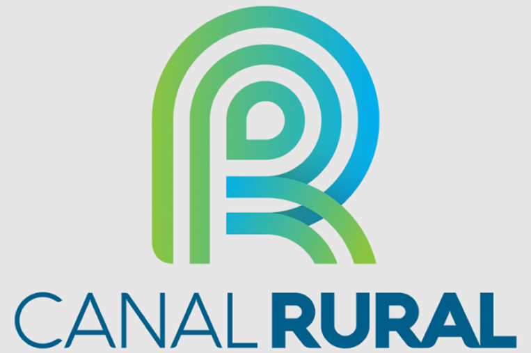
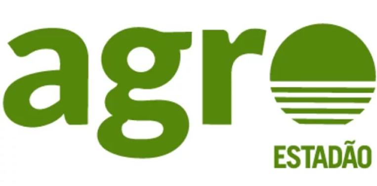

Explore as opções de programas no ambito rural, nossas redes de apoio e nossas ONGs afiliadas

Programas do campo para a cidade e para o mundo
Nos Conheça!
O projeto Pomar Urbano mira em celebrar a conexão do povo brasileiro, tanto sua parte rural, quanto sua parte urbana. Nosso site tem o objetivo de concentrar informações relevantes para aqueles que buscam oportunidades e comunidade.
NOSSA COMUNIDADE!


OUTROS!
COMO A CIDADE E O CAMPO
SE CONECTAM
NOTÍCIAS

